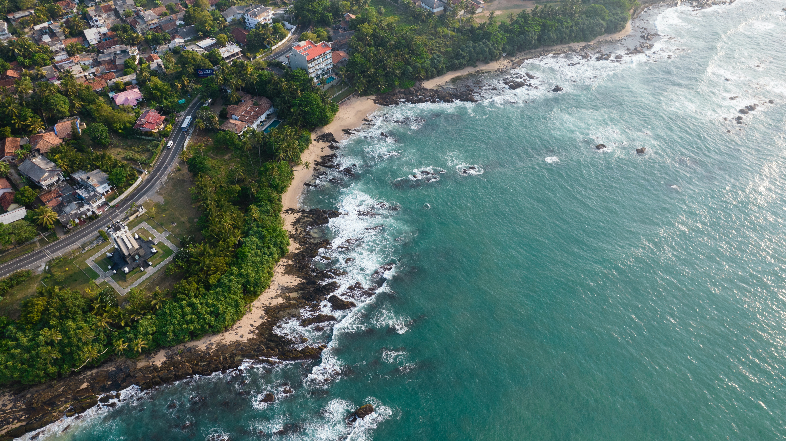

Hikkaduwa Turtle Hatchery
The Hikkaduwa Turtle Hatchery, established in 1986, is dedicated to conserving and preserving sea turtles in Sri Lanka. It collects eggs from the beaches and provides a protected environment for their incubation. Trained staff closely monitor the eggs, ensuring their safety from predators and adverse conditions. After hatching, the hatchlings are carefully handled, nurtured, and released into the ocean at optimal times. The hatchery also educates visitors about sea turtle conservation, promoting awareness and participation. Through these efforts, the hatchery plays a vital role in safeguarding sea turtles and contributing to their long-term survival.
In addition to its primary role in incubating and releasing sea turtle hatchlings, the Hikkaduwa Turtle Hatchery extends its commitment to the well-being of injured or disabled turtles. The hatchery provides a rehabilitation center where injured turtles receive medical treatment and care. For turtles that cannot be released into the wild due to their injuries or disabilities, the hatchery serves as a permanent home, ensuring their ongoing well-being. Visitors to the hatchery have the opportunity to witness these rehabilitation efforts and learn about the challenges faced by sea turtles and the importance of conservation. This educational aspect further fosters awareness and empathy towards these incredible creatures.
Plan Your Visit
- Location: Hikkaduwa, Galle District, Southern Province, Sri Lanka
- Hours: 8am-6pm daily
- Admission: Adults LKR 500, Children LKR 250
- Contact: +94 77 654 1123, hikkaduwahatchery@gmail.com
The Hikkaduwa Turtle Hatchery warmly welcomes visitors who are eager to learn about sea turtle conservation. Guided tours offer a unique opportunity to explore the hatchery's facilities and witness firsthand the efforts made to protect and preserve sea turtles. One of the highlights of the visit is the chance to actively participate in the release of baby turtles into the ocean, an unforgettable experience that fosters a deeper connection and appreciation for these remarkable creatures.